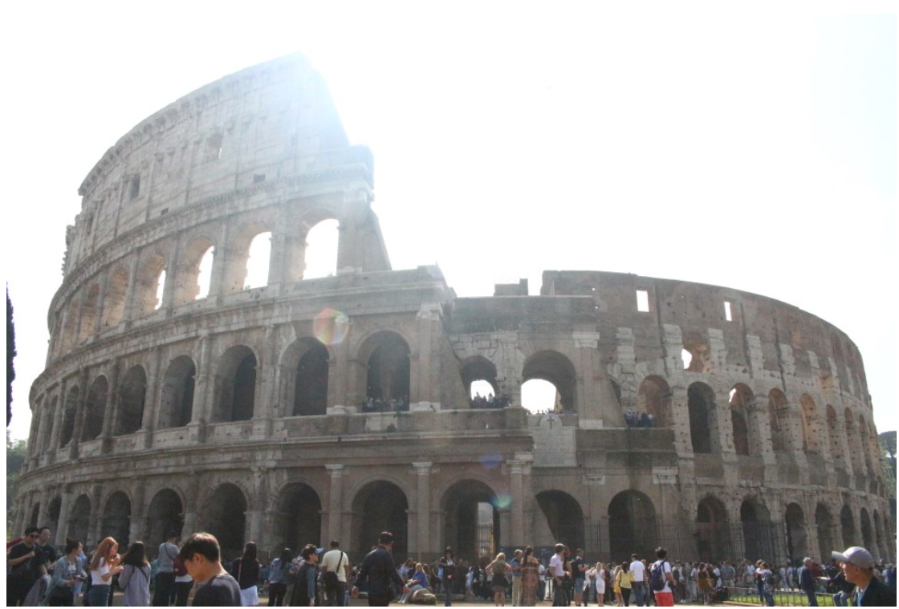
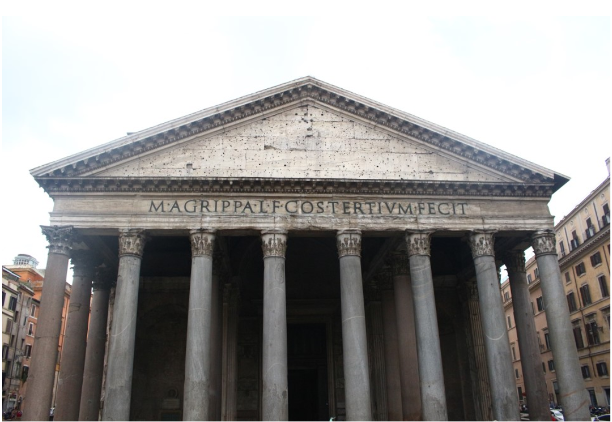

로마의 콜로세움은 70년경 베스파시아누스 황제에 의해 건설이 시작되었으며, 80년에 건축이 끝나 100일 축제 기간 동안 그의
아들인 티투스 황제가 개막식을 올렸다. 온천 침전물 대리석으로 건축된 이 커다란 원형 건물은 처음에는 플라비아누스 원형 극장이라는
이름으로 알려졌으며, 이곳에서 열리는 검투사 경기를 보러 찾아드는 5만 명 가량의 관객을 수용할 수 있었다.
중세에 콜로세움은 교회로 쓰였으며, 그 후에는 저명한 두 로마 가문인 프란지파네 가문과 안니발디 가문에 의해 요새로 이용되었다.
시간이 흐르며 이 건물은 손상을 입어 지진의 피해를 입거나 강도가 돌을 약탈해 가고, 자동차가 늘어나면서 생긴 현대의 공해에 시달리게
되었으나, 콜로세움은 여전히 잔혹한 여흥을 즐기는 인간의 취향을 반영하는 기념물로 남아 있다.
[네이버 지식백과] 콜로세움 [Colosseum]

명칭은 그리스어로 모두를 뜻하는 판(Pan)과 신을 뜻하는 테온(Theon)이 합쳐져 만들어 졌다.
아그리파 집정관에 의해 처음 건축된 판테온은 로마에서 발생한 대화재로 완전히 소실되었고 이후
하드리아누스 황제 때 로마를 재건하기 위한 계획으로 다시 건축되었다. 당시 판테온은 어떤 용도로 사용
되었는지 정확하게 전하는 바 없으며 현재는 신전으로만 알려져 있다. 아그리파 집정관 때 처음 만들어진
건축의 흔적으로는 석판이 남아있는 것으로 전한다.
그 수적 비례의 미와 강대한 내부 공감의 창조라는 당시의 경이적인 토목기술로서 서양건축사상 불후의 명작
가운데 하나로 꼽힌다. 브루넬레스키가 판테온의 돔 건축 방식을 채용해 피렌체 대성당의 돔을 건축하였고
이로인해 그는 르네상스를 대표하는 건축가로 인정받았다.
[네이버 지식백과] 판테온 [Pantheon] (두산백과)
피렌체/베네치아/시에나/밀라노...등등...